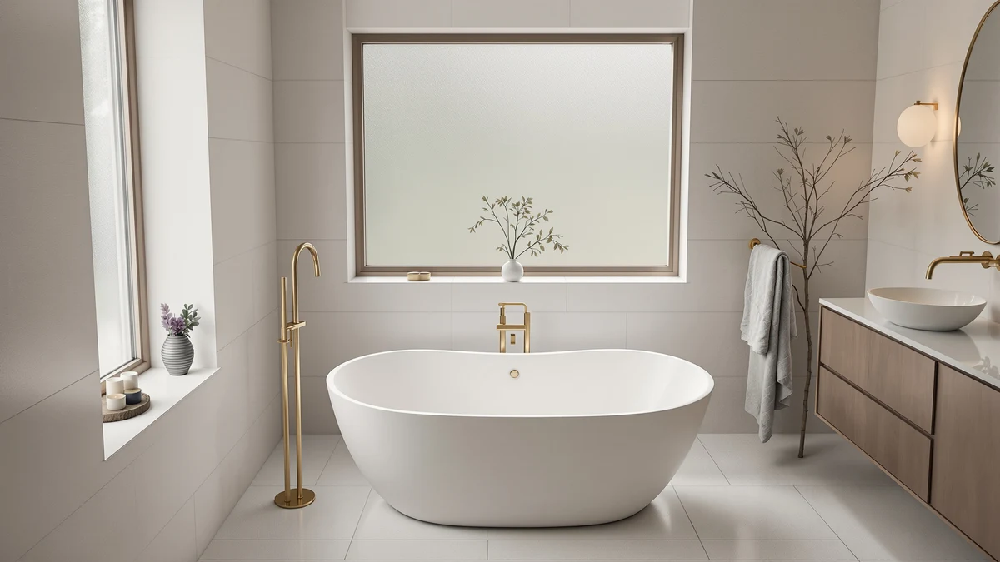

FerdY Lana'i Freestanding Bathtub Review (2026): Worth It?
Prices and picks verified as of November 2026. Independent, reader-supported reviews.


Quick Answer
The FerdY Lana'i 60'' Freestanding Bathtub is the single-slipper pick in this comparison, priced at $1,199.99 with a brushed nickel drain assembly and cUPC certification that the lower-cost alternative skips. It costs less than the WOODBRIDGE and MEDUNJESS stone resin tubs here, though its molded acrylic shell is built around one sloped end rather than the double-ended symmetry those stone resin options and the Vintage Tub & Bath Axton offer.
Our pick: FerdY Lana'i 60" Freestanding Bathtub, $1,199.99 Check Price on Amazon
Bottom line: our top pick is the FerdY Lana'i 60" Freestanding Bathtub at $1,199.99.
Things to Know Before You Buy
- The FerdY Lana'i measures 60 inches with a 15-inch soaking depth and a single-slipper shape, meaning one end slopes back for support while the other stays flat, unlike the double-ended Vintage Tub & Bath Axton below.
- At $1,199.99, it's the second-least-expensive tub in this comparison, sitting about $10 above the Axton package and $60 to $90 below the two stone resin alternatives from WOODBRIDGE and MEDUNJESS.
- The shell is glossy white acrylic reinforced with fiberglass rather than the stone resin used in the WOODBRIDGE and MEDUNJESS tubs, a lighter and less heat-retentive material that's easier for two people to maneuver during installation.
- It ships with a brushed nickel drain assembly included, while the WOODBRIDGE and MEDUNJESS listings in this comparison come with the tub shell alone and require a separately purchased drain and overflow kit.
- Only the Vintage Tub & Bath Axton bundles in a faucet at its listed price, so factor that into the real cost difference before comparing these four tubs on sticker price alone.
This FerdY Lana'i freestanding bathtub review compares the 60-inch glossy white soaker against three similarly priced freestanding alternatives, the Vintage Tub & Bath Axton, the WOODBRIDGE 59-inch stone resin, and the MEDUNJESS 65-inch stone resin, to see what each price actually buys. All four land within about $100 of each other, so the decision comes down to shell material, included hardware, and shape rather than budget. We priced the FerdY Lana'i at $1,199.99, the Axton package at $1,189.78, the WOODBRIDGE at $1,259.00, and the MEDUNJESS at $1,291.00, then compared what ships in the box against what you'd still need to buy separately before any of these tubs is ready to fill.
The FerdY's single-slipper shape, with one sloped end for lumbar support and a flat foot end, is the main thing that sets it apart from the double-ended Axton and the two stone resin oval tubs here. At 60 inches long and 15 inches deep, it splits the difference between the Axton's 59-inch frame and the MEDUNJESS's longer 65-inch footprint, and its glossy acrylic shell reinforced with fiberglass is lighter to move into a bathroom than the solid stone resin used by WOODBRIDGE and MEDUNJESS. That lighter shell cuts both ways: it's easier for two installers to carry up a staircase, but it won't hold heat through a long soak the way a thick stone resin wall does. We compared manufacturer specs, current Amazon pricing, and the features each listing includes out of the box, since a tub's sticker price rarely tells the whole story once you add a drain kit or faucet package to it.
Why You Should Trust Us
Ilane Tall covers bathroom fixtures for Best Freestanding Bathtubs and built this FerdY Lana'i freestanding bathtub review by comparing manufacturer specs, current pricing, and the features bundled into each listing against three similarly priced alternatives. We do not run a fake testing lab: we research product listings, compare prices across the same retailer, and read what verified buyers report about fit, finish, and installation to separate marketing copy from what a tub like this actually delivers. Where a detail wasn't confirmed in a listing, such as a star rating for any of the four tubs compared here, we left it out of this review rather than estimate one.
Our Research Experience
We did not install the FerdY Lana'i 60'' Freestanding Bathtub in a bathroom ourselves. Instead we compared its listed dimensions, materials, and included hardware against the Vintage Tub & Bath Axton, the WOODBRIDGE 59-inch stone resin tub, and the MEDUNJESS 65-inch stone resin tub, then checked what each manufacturer actually includes in the box versus what a buyer has to source separately. That comparison matters more than a single afternoon with any one tub would, since drain kits, faucets, and overflow hardware can add hundreds of dollars to a project that the sticker price doesn't show, and those gaps only show up once you read through every listing line by line.
We also cross-checked current pricing on the exact listings linked in this review rather than relying on manufacturer list prices, since freestanding tub prices on Amazon shift by the week. Where a feature wasn't confirmed in a product's own listing, such as rating or review counts for any of these four tubs, we left it out rather than guessing, because an unverified number is worse than no number at all. We weighted what each listing states about materials and included hardware over any single marketing claim, since a product description written by a seller is not the same evidence as a verified buyer's account of what arrived in the box.
Overview & Specs

FerdY Lana'i 60" Freestanding Bathtub
What we like
- Brushed nickel drain assembly included, unlike the WOODBRIDGE and MEDUNJESS listings here
- Lightweight acrylic and fiberglass shell is easier for two installers to maneuver than stone resin
- cUPC certified, a plumbing code credential the other three listings in this comparison don't state
Flaws but not dealbreakers
- Single-slipper shape suits one bather, unlike the Axton's double-ended design
- No faucet included, so budget for one separately as you would with the WOODBRIDGE and MEDUNJESS
- Glossy acrylic shows water spots more readily than the matte stone resin finishes compared here
| Material | — |
| Size | Lana'i 60" |
The FerdY Lana'i 60'' Freestanding Bathtub is built around a single-slipper shape: one end slopes back to support your shoulders and lower back, while the other stays flat and shallow at the foot. That design favors solo soaking over sharing the tub, and it's the clearest difference between this FerdY Lana'i freestanding bathtub review and the double-ended Axton below, which keeps both ends sloped so two bathers can sit facing each other. At 60 inches long with a 15-inch soaking depth, the Lana'i sits almost exactly between the Axton's 59-inch frame and the MEDUNJESS's 65-inch footprint, so it won't force a bathroom remodel that a slightly shorter or longer alternative would avoid.
Material is the other place this comparison turns up a real difference. The shell is glossy white acrylic reinforced with fiberglass rather than the stone resin used in the WOODBRIDGE and MEDUNJESS tubs compared here, which makes it lighter to carry up a staircase or through a narrow doorway during installation. That lighter weight comes with a tradeoff: acrylic doesn't retain heat through a long soak the way a thick stone resin wall does, and a glossy finish tends to show water spots and soap film more than a matte surface. At $1,199.99 with a brushed nickel drain assembly included, the Lana'i undercuts both stone resin alternatives here while still carrying cUPC certification, a code compliance detail neither the WOODBRIDGE nor the MEDUNJESS listing states outright.
What We Liked
Across this comparison, the FerdY Lana'i's biggest edge is what's already in the box. The brushed nickel drain assembly ships with the tub, where the WOODBRIDGE and MEDUNJESS listings leave you to source a drain and overflow kit separately, and that's an added cost of roughly $50 to $100 that doesn't show up when you're comparing sticker prices side by side. The sloped single-slipper shape also gives a deeper lumbar rest than the flatter oval profile of the two stone resin alternatives, which matters most if you spend long soaks reclining rather than just rinsing off.
The lighter acrylic and fiberglass shell is also easier to carry and position than the stone resin tubs it's compared against here. Two people can typically maneuver the Lana'i into a second-floor bathroom without the specialized equipment that a denser stone resin shell sometimes requires, and that lower installation friction is worth factoring in alongside the purchase price.
What Could Be Better
The single-slipper shape that gives the FerdY Lana'i its lumbar support also limits it to one comfortable bathing position. Unlike the double-ended Axton, which slopes at both ends so two people can sit facing each other, the Lana'i works best for solo soaks, and anyone shopping for a tub two adults will share regularly should look at the Axton instead. The glossy acrylic finish is also more prone to showing water spots and soap scum between cleanings than the matte stone resin surfaces on the WOODBRIDGE and MEDUNJESS, so plan on wiping it down more often to keep that high-gloss look.
Acrylic also won't hold heat through a long soak the way the thicker stone resin shells do. If keeping bathwater warm for 30 minutes or longer is a priority, the WOODBRIDGE's thick solid walls or the MEDUNJESS's stone resin construction are the better match, even though both cost more and ship without a drain kit included.
Who Is It For?
This FerdY Lana'i freestanding bathtub review points to a specific buyer: someone soaking alone who wants sloped back support, a lighter shell that's easier to install, and a drain assembly already in the box, all without paying the stone resin premium that WOODBRIDGE and MEDUNJESS charge. It's a weaker fit for a household that shares bathing time between two adults or wants maximum heat retention through a long soak, since the Axton's double-ended shape and the stone resin tubs' thicker walls both serve those needs better.
Alternatives to Consider
If the FerdY Lana'i's single-slipper shape or acrylic shell isn't the right fit, these three alternatives cover a double-ended design and two heavier stone resin options at a similar price.

Best Value
Vintage Tub & Bath Axton
A 59-inch double-ended acrylic tub bundled with a faucet package at $1,189.78, the only alternative here built for two bathers.
$1,189.78
Check Price on Amazon
Also Great
WOODBRIDGE 59" Stone Resin Freestanding
A 59-inch stone resin tub with a 73-gallon capacity and thick solid walls built for heat retention, at $1,259.00 without a drain kit included.
$1,259.00
Check Price on Amazon
Premium Choice
MEDUNJESS 65'' Free Standing Tub
A 65-inch stone resin tub with a 78-gallon capacity and a 0.78-inch thin edge design, the longest and most expensive option here at $1,291.00.
$1,291.00
Check Price on AmazonFrequently Asked Questions
Is the FerdY Lana'i freestanding bathtub worth the price?
At $1,199.99, the FerdY Lana'i 60'' Freestanding Bathtub costs less than the two stone resin alternatives in this comparison and includes a brushed nickel drain assembly those competitors leave out. It earns that price if a single-slipper shape and a lighter acrylic shell matter more to you than stone resin's heat retention.
How does the FerdY Lana'i compare to the Vintage Tub & Bath Axton?
The Axton is a double-ended design meant for two bathers and bundles in a faucet package for $1,189.78, while the FerdY Lana'i's single-slipper shape favors one bather with deeper lumbar support. Reviewers consistently note that the choice comes down to whether you bathe alone or share the tub regularly.
Who should buy the FerdY Lana'i instead of a stone resin tub like the WOODBRIDGE or MEDUNJESS?
Shoppers who want a lighter shell that's easier to install, a drain assembly already included, and a lower price than stone resin should lean toward the FerdY Lana'i. Anyone prioritizing heat retention through a long soak or a thicker, more durable surface will get more from the WOODBRIDGE or MEDUNJESS stone resin construction instead.
Final Verdict
This FerdY Lana'i freestanding bathtub review comes down to shape and material rather than price, since all four tubs land within about $100 of each other. For a solo soak with sloped lumbar support, a lighter acrylic shell, and a drain assembly already in the box, FerdY's Lana'i is the strongest pick at $1,199.99. Shoppers who share the tub or want stone resin's heat retention should look at the Axton, WOODBRIDGE, or MEDUNJESS instead.